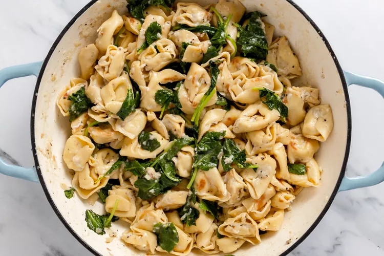
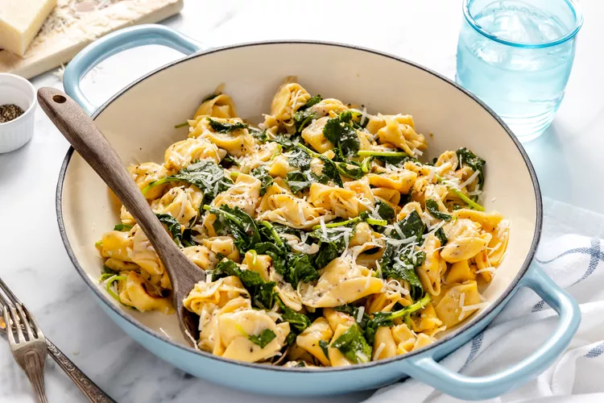

How to make a quick-cooking pasta even quicker? Ditch the pot of boiling water! This 20-minute tortellini dinner comes together in a single skillet leaving you with less dishes to wash and more time to sit down and dig in. It’s inspired by the classic Roman pasta dish cacio e pepe, whose creamy and richly pungent sauce is simply made with just two ingredients: salty Pecorino Romano cheese and plenty of freshly ground black pepper.
Here, fresh or frozen tortellini cooks right in the skillet while the water it cooks in simmers into a starchy, glossy sauce. Tender wilted greens not only add color, but bulk up the pasta to turn it into a true one-pan dinner. This is a comforting, feel-good meal that’s fit for the busiest of weeknights.
Heat 3 tablespoons of olive oil in a 12-inch cast iron skillet over medium heat until shimmering. Add the tortellini in an even layer. Cook, tossing occasionally, until nicely browned in spots, 2 to 4 minutes.
Add the water, kosher salt, and black pepper. Stir with a wooden spoon to combine, scraping up browned bits from the bottom of the pan. Cover with a lid or baking sheet and cook, stirring and scraping up any browned bits from the bottom of the pan occasionally, until the pasta is tender and glossy and almost all of the water has evaporated, 3 to 5 minutes.
Remove from the heat and stir in the greens, handfuls at a time, until just wilted, about 2 minutes.
Stir in the grated cheese and the remaining 2 tablespoons of olive oil. Serve garnished with additional grated cheese and freshly ground black pepper.
Refrigerate leftovers in an airtight container for up to 5 days.